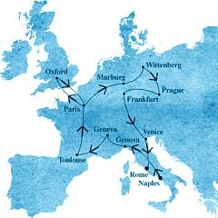

The ICPA is a private association created by friends and colleagues of journalist Jack Lorski in the wake of his murder in Scotland. The ICPA is aimed at helping international police and law departments to bring a swift end to the Phoenix's killing spree.
SKL NETWORK is the agency that Jack Lorski worked for. It decided to go public with the two CD-ROMs received from the Phoenix.
LIBERATION.FR has published several articles on the Phoenix case. Use its search engine to access its archives.
MODUS OPERANDI OF THE PHOENIX
In order to better understand and anticipate the criminal acts of a serial killer, investigators always study two very characteristic elements: his modus operandi (method of operation), which is the way he operates to commit his murders, and his signature, which is a bit like the "calling card" that he leaves at each crime scene.
The modus operandi concerns the type of victims (men, women, the elderly, children, etc.), the location and time of the crimes (in a house, a parking lot, a vehicle, day or night, etc.), the tools and equipment used to kill (rope, knife or firearm, poison, etc.), the manner in which the assailant approaches or attacks his victims (disguise, use of the internet, charm, etc.), the presence or absence of an accomplice (occasional or regular), and, finally, any clues the killer may have left behind that explain how he operated (traces of a break-in, poisoning a dog, for example).
The signature relates more to what allows us to understand the killer's psychology and motivations. It is rooted in his deep nature, and that is why he repeats it with each murder. A killer's signature can almost be described as "what he does too much," that is, all the acts he commits but which are "useless" or "superfluous" in order to kill his victims: torture, mutilation, rape, etc. The signature also concerns the way the killer uses his victims' corpses (inscriptions on the body, placing them in vulnerable or degrading positions, or even macabre scenes with props) and, finally, it concerns all kinds of messages (letters, inscriptions on walls, strange signs, etc.) that the killer may have deliberately left behind.
In the case of the Phoenix, and according to our latest information, he appears to have changed his modus operandi and even his signature three times. According to experts, this sometimes happens when particularly intelligent killers feel threatened or face an unforeseen event; it can also be a deliberate choice on their part, indicating a change in their motivations. Several murders with different modus operandi can therefore be linked and traced back to the same killer.
- ANALYSIS OF THE FIRST TWELVE MURDERS
• Modus Operandi
1. Although the first twelve victims were of different ages and sexes, they were all members of Manus Domini. According to the killer's writings, it was this shared membership in this secret society that motivated his choice of victims; it was his way of avenging Professor Peter Volker, murdered in 1975 by henchmen of this organization.
2. The crime scenes differ, but all the cities chosen are linked to the long European journey undertaken by the Italian philosopher Giordano Bruno from 1565 to 1600 (Photo 1). Moreover, in each of these cities, the Phoenix chose specific places where his master had lived or taught, and where he had clashed with the religious, political, or scientific authorities of the time. The killer thus achieved another of his objectives: to avenge Giordano Bruno, condemned to the stake in 1600 by the terrible medieval Inquisition, of which Manus Domini seems to be the current heir.
The choice of Guido Corliano, head of Manus Domini in Europe, as the last victim of this first series of murders, the choice of Piazza Campo de' Fiori in Rome, where Giordano Bruno was burned, as the site of this crime, and finally the choice of February 17, identical to the date of the philosopher's death, as the day of the crime, further add to the highly symbolic dimension that the Phoenix wished to give to all his acts and testify to the care, precision, and determination with which he prepared and carried them out.3. Another common thread among these twelve murders is the way the Phoenix seems to have found his victims: he says he identified them all online, through their personal websites (José Cortado, Helena Whitford, Hilde Gardener, Carl Breitner), their professional websites (Brother Francesco, Father Malard, Markus Hermann), or even through the websites of their relatives or associations they belonged to (Gianni Maggioli, Carolina Molikova, Francesca Bartolini). According to Guido Corliano, a prominent scholar of ancient languages, investigators believe the Phoenix knew him,at least in name, before starting his series of murders; as for Antonio Foscarini, the killer did not need to look for him since the journalist was investigating him, he only had to lure him into a trap that respected the ritual he had set for himself (killing his sixth victim in Paris), which also proves his astonishing capacity for adaptation and the extraordinary composure he can demonstrate in times of danger.
4. The Phoenix varied his methods to kill his victims (firearm, bladed weapon, strangulation, etc.) but he never used indirect means (sabotage or bombing of cars, poisoned drinks, booby-trapped homes, etc.), this demonstrates at best his total insensitivity, at worst a certain pleasure in causing death with his own hands. It is also possible that certain ways of killing were part of the staging of his crimes.
5. Finally, it seems that the killer acted alone, either by seducing his future victims (mainly women), or by using his strength (for elderly or physically weak victims), or by setting traps for them (for stronger victims). Here again, the alternating use of charm, strength, and cunning depending on the adversary demonstrates his ability to adapt to all situations, which only reinforces his unpredictability and increases his "dangerousness."
• Signature
1. The Phoenix's main signature during his first twelve murders was the way he staged his victims' corpses. Each of them, sometimes accompanied by props, was arranged in such a way as to recall the statement of one of the twelve elementary principles of Brunian magic that the Italian philosopher described in 1591 in his final treatise, De imaginum idearum compositione; on the foreheads of some victims, the Phoenix even branded the astrological symbols corresponding to these principles. Not only do these gruesome gestures confirm the direct connection between all these murders and Giordano Bruno, but they also highlight a particular characteristic of the philosopher: his attachment to solar magic and Egyptian hermeticism.
2. Near each corpse, or sometimes even on it, the Phoenix has written the Latin inscription "SOL INVICTUS" (Photo 2), most often in the victims' own blood. This message, linked to the name the killer chose for himself, "The Phoenix," once again refers to the solar cult and magical tradition of ancient Egypt. 3. The Phoenix did not rape any of his victims, but he meticulously tortured almost all of them, most often by burning them with a hot iron or sometimes using a bladed weapon. The killer therefore does not appear to have acted out of sexual or criminal impulses, but rather in a deliberate and premeditated manner. - ANALYSIS OF THE THIRTEENTH MURDER
Alex Borgo's death bears no common characteristics with the first twelve Phoenix murders, or even with those that followed. The victim, who was not a member of Manus Domini, was killed in her home by a single shot fired at close range; moreover, this murder appears to have been disguised as a suicide, which is completely contrary to the Phoenix's previous practices. The very classic modus operandi and the complete absence of a signature do not suggest the crime of a serial killer, but rather a heinous or passionate settling of scores committed by an occasional killer. Several months after committing it, the killer claimed responsibility for the murder on a CD-ROM sent to SKL Network, explaining that he had eliminated Borgo solely because the journalist's investigation into the secret society Manus Domini risked disrupting his plans, particularly his search for Codex 14. Without this confession, it would have been very difficult for investigators to connect this crime to the twelve previous ones. - INFORMATION ON THE NEW MURDERS
• MODUS
At the current stage of our research, it is still impossible for us to define a common MO for the three murders committed in Spain and for the murder of Jack Lorski in Scotland. All that is currently known is that the Spanish victims were men of the same age group (60-70 years old) who all three lived in the Granada region of Andalusia.
NUnfortunately, we have no precise and verified information on the circumstances of our friend Jack's death, and we sincerely hope that the decryption of the DVD-ROM recently received by the ICPA president will provide us with information on this subject.
• Signature
However, while it is still too early to identify the Phoenix, we are now convinced that these four murders were indeed committed by a single person; indeed, their signature is clear and precise:
1. The four victims were savagely tortured and then killed with knives. They all had numerous pre-mortem injuries.
2. The mouths of the four victims were cut in the shape of a cross and contained a piece of parchment representing part of a sundial.
3. Finally, all four bodies had a limb or organ amputated: a hand, an ear, and the tongue for the three Spanish victims, and a large portion of the torso for Jack Lorski.
All these signs, all these "trademarks" are proof that this serial killer, Phoenix or not, adheres to a well-defined ritual. This new signature, significantly different from that of the first twelve murders, may be a sign of an evolution or a change in behavior linked to new facts (the recovery of Codex 14, for example). If this is the case, it means that the Phoenix has set itself a new objective, certainly a formidable one, and that it has begun a new series of ritual murders, even more atrocious than the first, to achieve it at all costs.